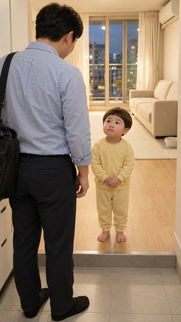
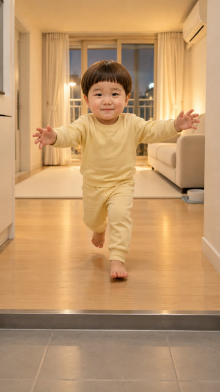
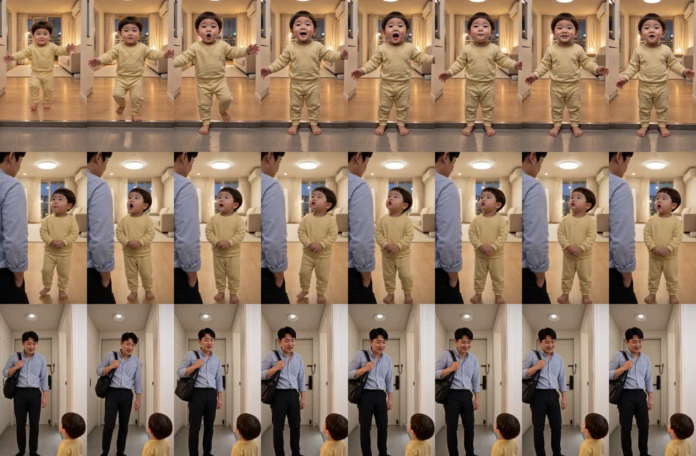

아빠 왔다~ 1·4·5컷 — 확인 부탁
5컷 명세에 «현관 오른쪽 = 문틀까지 평평한 흰 벽, 문은 현관문 하나» · 조명 문구에서 «스탠드» 뺌. 왼쪽 = 시작 그림, 오른쪽 = H3 영상.
5컷 «그럼 다시 회사 가서 야근이나 해야겠다…»

시작 그림
방문·스탠드 사라짐 · 왼쪽 신발장·가운데 현관문(걸쇠)·오른쪽 흰 벽 있음
카메라가 정면 쪽으로 바뀌어 구도는 시작 그림과 다름(이탈 점수 0.11로 자동 검사에 걸림)
4컷 «엄마가 맛있는 거 사온다 그랬는데…»

시작 그림
아빠 팔·올려다보는 도윤·뒤 거실 — 내용은 맞음. 시작 그림보다 크게 당겨 찍음(0.22로 자동 검사에 걸림)
1컷 «엄마다! 엄마 왔떠?»

시작 그림
마지막에 도윤이가 마루 끝을 넘어 타일로 내려섬(세 번 시도 모두 같음)
0.5초 간격 (위 1컷 · 가운데 4컷 · 아래 5컷)
